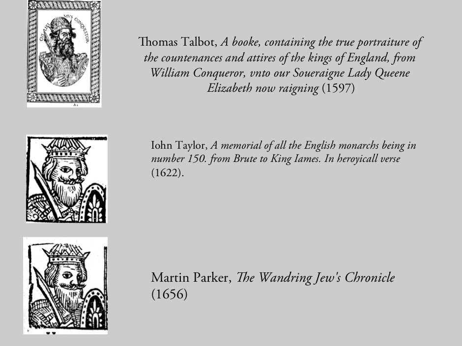
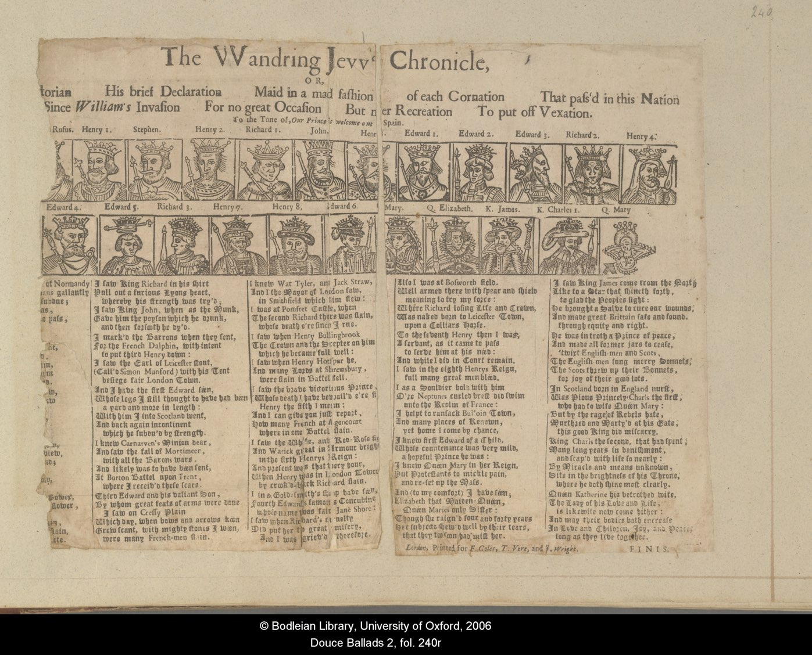

3. The ballad's narrative form
As its title suggests, the ballad is narrated by the mythical Wandering Jew, a figure proverbially cursed with immortality for having insulting Christ and forced to wander until the end of time. Although a figure of considerable antiquity, the modern version of the myth can be dated to a German 'volksbuch' or folk-book (a concept similar to that a chapbook) that claims to have been printed at Leiden by an otherwise unrecorded printer, Christoff Crutzer, in 1602-3. This book was a publishing sensation across Europe, perhaps one of the first successes of the nascent popular press, and was reprinted in Germany in at least twelve editions in that year alone. Translated into English, it was registered (and presumably published) in 1612 as a pamphlet which no longer survives, but which seems likely to have been the source for a ballad, The Wandering Jew or the Shoemaker of Jerusalem, printed in at least sixteen English broadsides between 1620 and 1800 and anthologised in numerous collections of ballads, such as Thomas Percy's Reliques of Ancient English Poetry (1765).[1]
The use of the Wandering Jew as a chronicler is a specifically English variant of the myth: it descends from a story recorded in a 13th Century chronicle by Roger of Wendover, passed on to his continuator Matthew Paris and others, and revived in the Chronicle. The Chronicle opens with the narrator witnessing William of Normandy's accession to the English throne by conquest in 1066:
WHen William Duke of Normandy
With all his Normans gallantly
this kingdome did subdue;
Full fifteen years of age I w[a]s,
And what ere since hath come to pass
I can report for true.
The ballad follows the custom of its time in dating the beginnings of the modern English state to the Conquest of 1066. In its second stanza however, the narrator reports an early challenge to William's authority:
I can remember since he went
From London for to conquer Kent,
where with a walking wood
The men of Kent compassed him
And he for aye confirm'd to them
King Edwards laws for good.
Although the image of the 'walking wood' is best-known from Shakespeare's Macbeth, the source for this story of resistance to a king originates in the chronicle of Thomas Spotus of Canterbury, reprinted in the early-modern period in various antiquarian commentaries.[2] 'King Edward's Laws' are those of Edward the Confessor (1042-1066), a rhetorical keystone of the so-called 'Ancient Constitution' under which English common law was regarded as a single, unbroken tradition, descending not from the Roman law that Continental European regimes aligned themselves with, but from a corpus of Anglo-Saxon law handed down by oral tradition and custom since time immemorial. Promulgated by early-modern historians and lawyers in search of a myth-history with which to underpin an insular, post-Reformation national history, the Ancient Constitution was one of the most furiously debated ideas of its day, invoked in particular in debates about the limitations of the monarch's power and the extent of parliamentary sovereignty.[3] A learned argument, its invocation in a cheap printed ballad, the very avatar and agent of popular oral tradition according to antiquaries such as John Aubrey, is surprising only if one thinks of learned and popular culture as respectively synonymous with literacy and orality, and as entirely separate spheres.[4]
The Wandering Jew's Chronicle, then, looks back to both the immemorial past and to more recent dynastic history. Its conceit is to adopt the Wandering Jew, a figure of mixed ancestries, as an historical witness over the centuries. There are no references to anglo-jewish historical experience in the text, although there is a resonance between the character's proximity to the monarch and the royal protection, established by William the Conqueror, under which a Jewish community was said to have been first established in England. Edward I's expulsion of the Jews in 1290 is not mentioned in the text, nor are the readmission debates that took place under Cromwell in 1656, after which a Jewish community was re-established. The Wandering Jew however is a convert to Christianity, although paradoxically still identified as a Jew: as a 'Living Letter of the Law' he bestows a providential dignity to the English monarchy and nation.[5]
The Wandering Jew's song concludes with Charles on the throne, upholder to the death of the divine right of kings, following a stanza on his father, James I of England and VI of Scotland. He predicts the continuation of the Stuart lineage, by birth:
From him by lineal right did spring
This happy Charles our Royal King
and now to make conclusion
I wish him and his gracious Queen
And Princely off-spring may be seen
until earths dissolution.
Beginning and ending as it does with a king, The Wandering Jew's Chronicle belongs to the basic genre of historical writing known to anthropologists and historiographers as a kinglist. A common form of oral history, as Aubrey's anecdote attests, the kinglist is also a fundamental structure for the organisation of English legal and other official documents.[6] As it is generally accompanied by woodcut portraits, the ballad also resembles a visual genre, that of the portrait gallery. Hardwick Hall in Derbyshire, for example, possesses a long gallery which was, according to an inventory of 1601, lined with royal portraits in chronological order. Kenninghall in Norfolk had a similar gallery, as did Whitehall in London, while Holyrood Palace in Edinburgh still contains a sequence 110 portraits of Scottish monarchs - a competing lineage of the royal succession to that of England, although converging with the English line in 1601, with James.[7] Printed royal portrait-sequences likewise abound.[8] Thomas Talbot's True Portraitures of 1597 provided the models for the illustrations of John Taylor's verse Memoriall of all the Monarchs, which in turn were closely copied (onto different blocks) for the illustrations for the Wandering Jew's Chronicle.[9]

Fig. 4. Iconographic chain of printed portraits of William I.
Although The Wandering Jew's Chronicle seems a text of its time, with its theme of sacred kingship tinged with the fashionable anglo-saxonism and millenarian philosemitism of the seventeenth century, its subsequent history provides a wholly other dimension - that of tradition. Many printed ballads belonged wholly to their own time and were never reissued some have remained in print since they were first composed but The Wandering Jew's Chronicle was not just reprinted over the next two centuries, but continually updated and revised to the present. The first revision, which takes in the deposition and execution of Charles by the English Parliament, was published by the partnership of Francis Coles, Thomas Vere and John Wright between 1663 and 1674: it again survives in only a single copy, designated here as C.1(a), also now in the Bodleian Library.[10]

Fig. 5. The VVAndring Jevv's Chronicle (C.1.a)
Although damaged, the same woodblocks have clearly been employed and the ballad contains much the same text, apart from its ending which, anonymously revised some years after Parker's death, replaces the earlier conclusion with the following lines:
In Scotland born in England nurst,
Was Pious Princely Charls the first,
who had to wife Queen Mary:
But by the rage of Rebels hate,
Murthred and Marty'd at his Gate,
this good King did miscarry.
This updated version of the ballad makes no mention of the eleven-year Commonwealth period that followed Charles' execution, and ends with the Restoration of the monarchy in the form of Charles II:
King Charls the second, that had spent,
Many long years in banishment,
and scap'd with life so nearly:
By Miracle and means unknown,
Sits in the brightness of his Throne,
where he doth shine most clearly.
Queen Katherine his betrothed wife,
The Lady of his Love and Life,
is likewise now come hither:
And may their bodies both encrease
In Love and Children, Joy, and Peace,
long as they live together.
This ballad was reprinted twice, with the same woodcuts and an almost identical text: lone copies of each edition survive, now in the British Library as part of the Roxburghe Collection and in the Pepys Library in Magdalene College, Cambridge.[11] A pattern under which new monarchs generated new versions of the ballad was now set: it was to be followed by the ballad trade for almost two centuries.
[1] See George K. Anderson, The legend of the Wandering Jew, Brown University Press, 1965); and The Wandering Jew: essays in the interpretation of a Christian legend, edited by Galit Hasan-Rokem and Alan Dundes, (Indiana University Press, 1986).
[2] The story is told in a ballad by Thomas Deloney in 'The Kentish-men with Long tayles', published in his Strange Histories (1602), evidently a direct influence on Parker for The Wandering Jew's Chronicle (compare Deloney's opening line 'When as the Duke of Normandie' with Parker's 'When William Duke of Normandy').
Although Spotus' story (on which, see Holt, 'The Ancient Constitution', p.68) is given in Holinshed's Chronicle, famously one of Shakespeare's sources, a 'walking wood' is also given in a well-known Scottish source, the Buik of Alexander, and subsequent histories and folktales. As with so many aspects of the Chronicle, there are multiple lines of descent - what literary scholars call 'overdetermination'. For other instances of the Spotus story, see J.C. Holt, 'The Ancient Constitution in medieval England', in The roots of liberty: Magna Carta, Ancient Constitution, and the Anglo-American tradition of rule of law, ed. by Ellis Sandoz, (Liberty Fund, 2008), http://oll.libertyfund.org/titles/2180 - lfSandoz1470_110 [accessed 11/9/2014.].
[3] J. G. A. Pocock, The ancient constitution and the feudal law: a study of English historical thought in the seventeenth century, (Cambridge University Press, 1957); Janelle Greenberg, The radical face of the ancient constitution: St. Edward's 'laws' in early-modern political thought, (Cambridge University Press, 2001).
[4] For counters to this assumption see Fox, Oral and literate culture in England; Daniel Woolf, The idea of history in Stuart England, (University of Toronto Press, 1990); and Peter Burke,Popular culture in early modern Europe, 3rd edition, (Ashgate, 2009).
[5] Cecil Roth, A history of the Jews in England, 3rd. edition, (Oxford University Press, 1964); David Katz, Philo-semitism and the readmission of the Jews to England 1603-1655, (Oxford University Press, 1982); Eliane Glaser, Judaism without Jews: philosemitism and Christian polemic in early-modern England, (Palgrave: 2007); Jeremy Cohen,Living letters of the law: ideas of the Jew in medieval Christianity, (University of California Press, 1999); Robin R. Mundill, England's Jewish solution: experiment and expulsion, 1262-1290, (Cambridge University Press, 1998).
[6] See e.g. Jan Vansina, Oral tradition as history, (University of Wisconsin Press, 1985) and David N. Dumville, 'Kingship, genealogies and regnal lists', in Early medieval kingship, ed. by P.H. Sawyer and I.N. Wood, (Leeds University Press, 1977), 72-104.
[7] Roy Strong, The English icon: Elizabethan and Jacobean portraiture, (Routledge, 1969).
[8] e.g. John Rastell's Pastyme of the People (1530), Giles Godehed' wood-engravings from Noah to Philip and Mary (c.1555-58)
[9] John Taylor, A memorial of all the English monarchs, being in number 150. from Brute to King Iames. In heroyicall verse, Printed at London: [by Nicholas Okes], 1622, (ESTC S118223), revised and updated to Charles I in an edition of 1630. (ESTCS118225). There are some differences between the Chronicle woodcuts and the comparable sequence of those in Taylor's larger work - A.2 and its subsequent copies substitute the likenesses of John, Edward I, Edward II and Edward IV with each other while A.2 adds a likeness of Henrietta Maria. The woodcuts in Taylor's book (not to be confused with his A Briefe Remembrance of all the English Monarchs, a work with similar illustrations printed in various editions between 1618 and 1622) are themselves loose copies of the engravings in Thomas Talbot's A booke, containing the true portraiture of the countenances and attires of the kings of England, from William Conqueror, vnto our Soueraigne Lady Queene Elizabeth now raigning: together with a briefe report of some of the principall acts of the same kings, especially such as haue bene least mentioned in our late writers. Diligently collected by T.T., Printed by [R. Field for] Iohn de Beauchesne dwelling in the Blacke Fryers, 1597 (ESTC S100225).
[10] See http://ballads.bodleian.ox.ac.uk/collection/douce(accessed 5/12/13).
[11] The Roxburghe and Pepys ballad collections are available through the English Broadside Ballad Archive at http://ebba.english.ucsb.edu[accessed 11/9/2014).